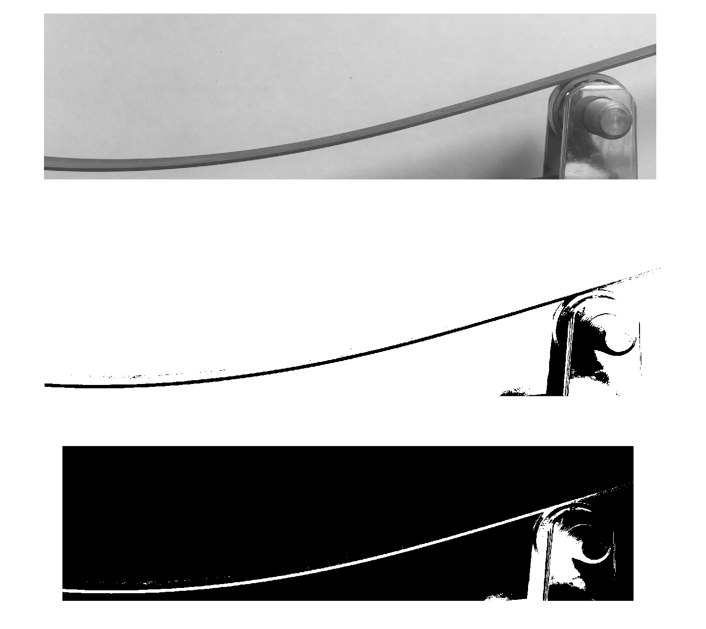
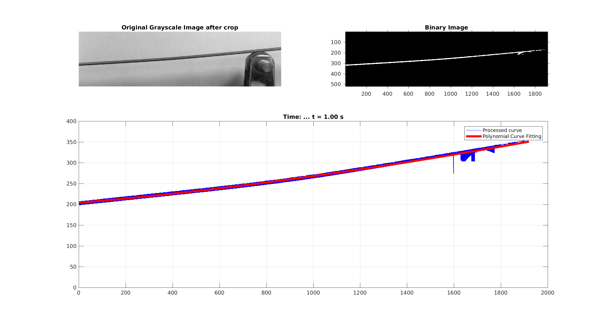

Beam deflection experiment
Posted on October 21, 2017 in research
The goal of this experiment is simply to understand how to handle Image Processing tools in Matlab. Therefore, I recorded a video from the CHMS lab of a bending experiment. The future goals is to evaluate materials composition of a beam using Image Processing toolbox.
Watch the following video:
Instead of trying to analyze the video, which I think it is also possible, I created a sequence of images using the following command on Ubuntu:
1 | ffmpeg -i beam_deflection.mov -r 1 -f image2 beam-%01d.jpg
|
I started analyzing one image in the matlab, then I created a loop to do with all recorded images. So, I created a matlab script based on the following steps:
- Read image using the imread;
- Convert to grayscale using the rgb2gray;
- Crop the region of interest;
- Binarized the image;
- Excluded part of the structure because it was a noise for the following steps;
- Find the coefficients of polynomial;
- Plot and save the figure in the same folder.

The last step was to generate a .gif image. For this task I used:
1 | convert -delay 100 -loop *.png output.gif
|
Check the final results:
